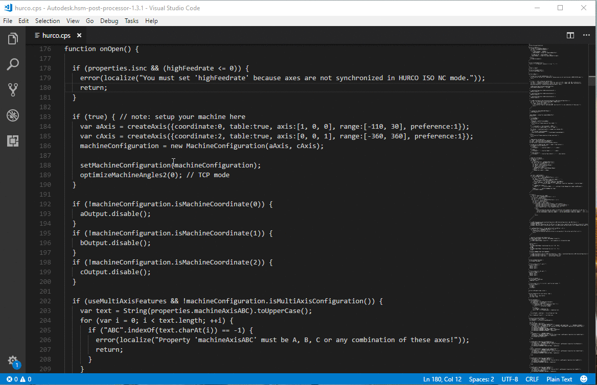
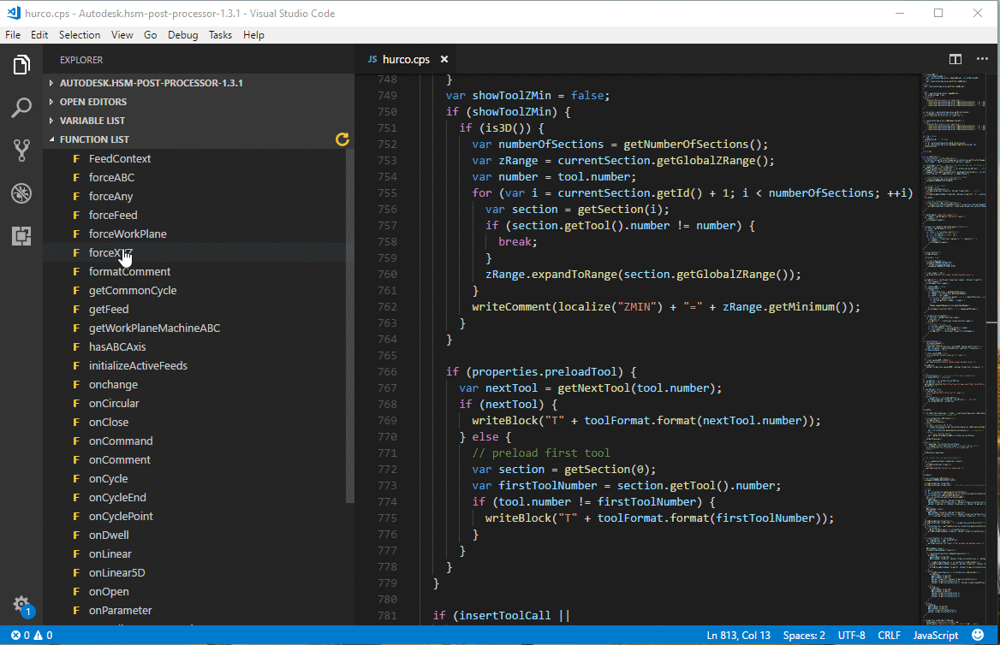
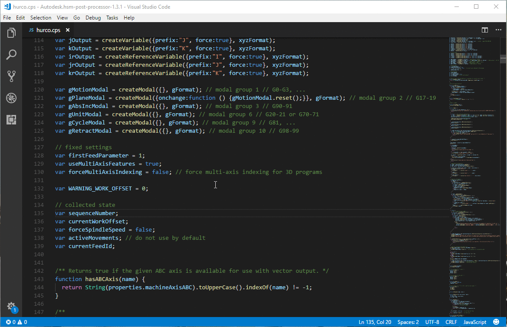

To enable syntax highlighting, you must first add the .CPS file extension to the JavaScript language. To do this, click F1 in your workspace and type ‘User settings’ and press enter. Inside the user settings, you need to add the following block to your settings:
"files.associations": { "*.cps": "javascript" }
The function list will be displayed in the explorer tab of the VSCode left flyout pane. The function list is updated when a document is opened, saved and when the view changes. To force an update to the function list, click the small refresh icon. The refresh icon can be found next to the function list dropdown title (the icon only appears when your cursor is over the function list).
The function list will be displayed in the explorer tab of the VSCode left flyout pane. The function list is updated when a document is opened, saved and when the view changes. To force an update to the function list, click the small refresh icon. The refresh icon can be found next to the function list dropdown title (the icon only appears when your cursor is over the function list).
This extension adds post processing functionality within VSCode. There are several files available for post processing within VSCode, each of which will produce different results to aid in the development of specific functionality within a post processor. The post processing inside of VSCode is used entirely for development purposes, although the results might be identical, actual code should be posted from the CAM software to prove the results.
A post processor to easily add CNC files into this VS Code extension is included with the install of this extension, it can be downloaded and saved by clicking F1 and typing: 'HSM: Download CNC exporting post processing'. Once downloaded, simply post process your program using the downloaded post, then click the refresh icon in the CNC selector tree. Once refreshed, your CNC file will be located inside of the 'Custom' folder.